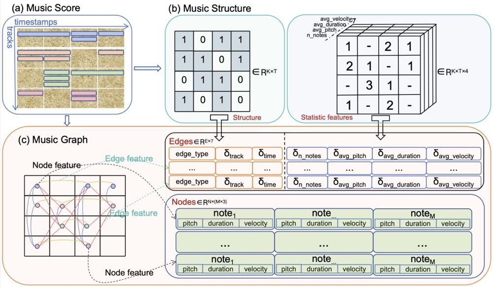
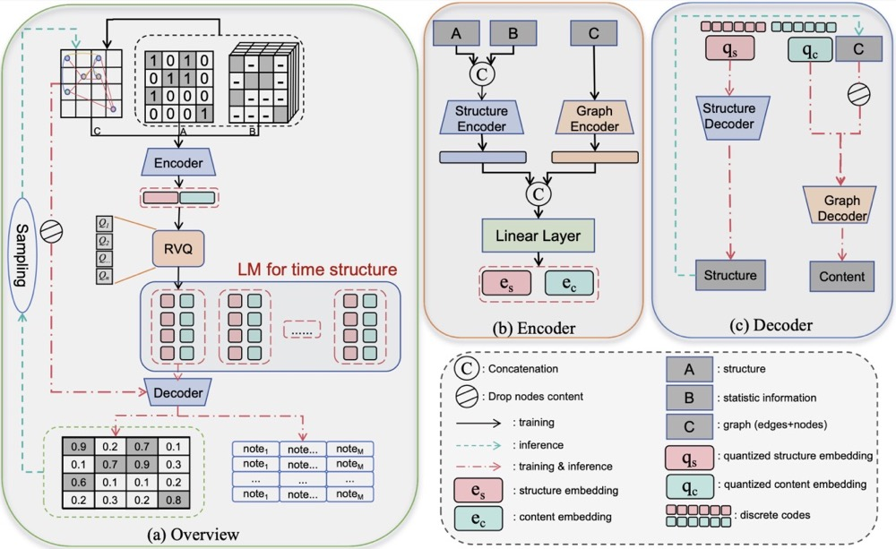

MuGraphCodec: Enhancing Long Music Generation through Vector Quantization on Symbolic Music Graph
Abstract
Symbolic music generation involves the automated creation of musical scores, which plays a crucial role in art and music composition. This task is inherently challenging due to the intricate temporal-spatial arrangements, especially when dealing with multi-track polyphonic music . One prevalent approach is to convert music scores into discrete tokens and utilize transformer-based language models for subsequent generation. However, flattening music scores can disrupt their inherent structure, resulting in overly long sequences that hinder effective learning. An alternative approach focuses on developing a latent representation through the use of music structure-aware encoders and decoders, incorporating tree and graph structures. However, this method may only generate music pieces spanning a few bars, as a single latent representation may not be adequate for capturing the nuances of longer compositions. In this study, we introduce MuGraphCodec, a more compact and structure-aware neural discrete representation of symbolic music designed for efficient long music generation. Specifically, a graph structure tailored for polyphonic music is designed to preserve the inherent musical arrangement effectively. Additionally, we utilize a GNN-based encoder to capture per-bar features. To obtain discrete representation, residual vector quantization (RVQ) is employed on these per-bar features. Finally, a GNN-based decoder is used to reconstruct the symbolic music. MuGraphCodec can be seamlessly integrated into a language model framework for generation tasks, whose quality is further demonstrated by experiments.

